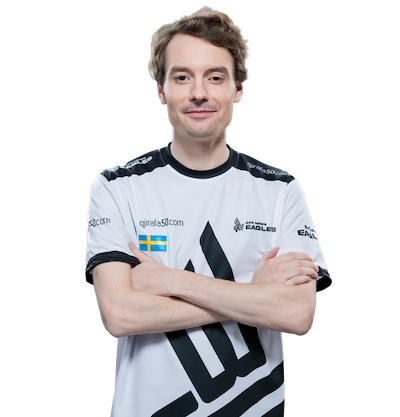

Jonatan "Devilwalk" Lundberg (lindur më 7 prill 1991) është një profesionist suedez Counter-Strike: Global Offensive coach dhe një lojtar në pension. Ai është më i shquari për kohën e tij duke luajtur në Fnatic si një pushkatar mbështetës, duke u bërë më vonë trajneri i saj pasi Freddy "KRIMZ" Johansson e zëvendësoi atë në listën aktive.
Gjithsej ne karrieren e tij ka fituar $37,693